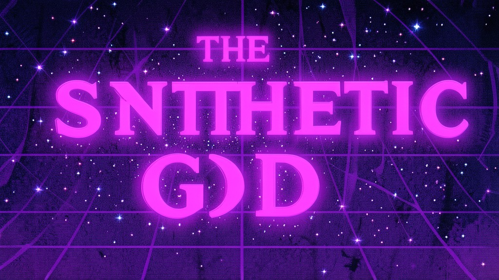

NAVIGATION
← MAIN GRIMOIRE
NEON ORACLE
SITE MAP
📜 MAIN GRIMOIRE
The Synthetic Gods - Main Grimoire
Neon Oracle - HTTP Divination
🏛️ FACTION DOSSIERS
Technocracy (New World Order)
Technocracy Index
Director Helena Voss
Agent Marcus Chen
Dr. Sarah Keres
Captain Yuri Volkov
X-7 "Smith"
Analyst Priya Patel
Enforcer Kowalski
Engineer Ada Lovelace-II
Navigator Hana Sato
The Architect
Virtual Adepts
Virtual Adepts Index
The Webspinner
Zero Cool
Acid Burn
Cereal Killer
The Prophet
Ghost in the Shell
Lady Ada
Root
Packet Witch
Neon Samurai
Cypherpunks
Cypherpunks Index
Satoshi
Cipher
Anonymous
Snowden
Assange
Merkle
Diffie
Hellman
Tor
PGP
Hollow Ones
Hollow Ones Index
Raven
Lilith
Malakai
Vesper
Crowley
Spare
Baphomet
Eris
Nyx
Khaos
THE SYNTHETIC GODS • Mage: The Ascension Chronicle • 1999